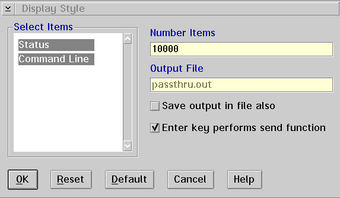

Display style...
Displays the Display Style window, which allows you to select the items
you want displayed in the window, select the number of items you want displayed,
change the function of the Enter key, and save the output in a file.
To use the Display Style window:
- Select the items you want under the Select Items
group heading. Each item you select causes a new column to be added
to the response area of the Passthru window.
- In the Number Items entry field, type the number of
lines you want to be displayed in the response area. The maximum number
of lines is 10,000.
- The Output File entry field allows you to specify
the name of the file where Passthru responses are optionally saved.
- The Save output in file also check box allows you
to copy the Passthru response items into a file (logging function). If the
check box is enabled, the responses are copied into the file that you specified
in the Output File entry field.
- The Enter key performs send function check box allows
you to enable or disable the Enter key from performing a send function.
If the check box is enabled, the Enter key will perform the same function
as the Send push button. If it is disabled, the Enter key will perform a
carriage return.
[Back: Fonts...]
[Next: Restore defaults]